SDG10
ลดความเหลื่อมล้ำ
Reduced Inequalities
เกี่ยวข้องอย่างไรเป้าประสงค์ 10.4 ให้ใช้นโยบายการคลัง ค่าจ้าง และการคุ้มครองทางสังคมลดความเหลื่อมล้ำ [4]
แคมเปญช่วยอธิบายเรื่องนี้ให้เข้าใจง่าย และเปิดพื้นที่ถกข้อเสนอ
01/ 10แคมเปญHome
“สวัสดิการคือสิทธิ เพื่อชีวิตที่มั่นคง”
คนทำงานในไทยกว่าครึ่งอยู่นอกระบบ ทำงานเหมือนกัน แต่หลักประกันอาจต่างกัน มาเรียนรู้ ลองเล่น และส่งเสียงไปด้วยกัน
ถ้าคนทำงานในไทยมี 100 คน
52 คน เป็นแรงงานนอกระบบ
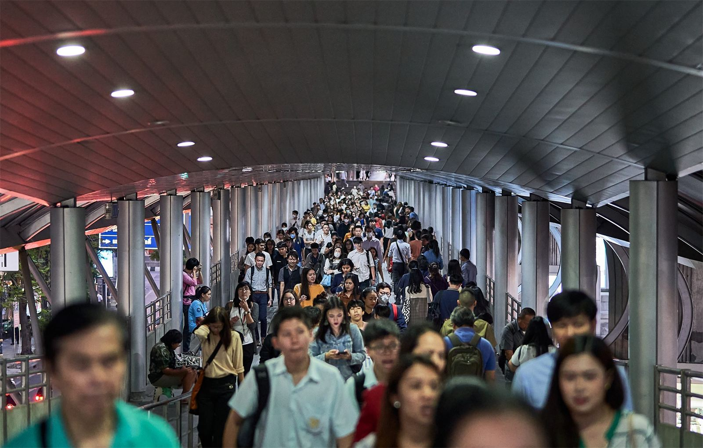
คนทำงานไทย 39.9 ล้านคน เดินทางทุกวันเพื่อหาเลี้ยงชีพ แต่ไม่ใช่ทุกคนที่มีหลักประกันรองรับเท่ากัน
ภาพ: [ใส่ที่มาของภาพ IMG_0617]02/ 10ปัญหาAbout the Issue
ประเทศไทยยังเผชิญปัญหาความเหลื่อมล้ำทางเศรษฐกิจ แม้ประชาชนต่างทำงานเพื่อสร้างรายได้และความมั่นคงในชีวิต แต่กลับมีโอกาสเข้าถึงสวัสดิการและหลักประกันทางสังคมไม่เท่าเทียมกัน โดยเฉพาะแรงงานนอกระบบที่มีรายได้ไม่แน่นอนและอาจขาดความคุ้มครองบางด้าน เมื่อเจ็บป่วย ว่างงาน หรือเข้าสู่วัยสูงอายุ ความแตกต่างเหล่านี้จึงสะท้อนถึงช่องว่างของระบบสวัสดิการไทย และนำไปสู่คำถามสำคัญว่า เราจะสร้างหลักประกันพื้นฐานที่เป็นธรรมและเข้าถึงได้สำหรับคนทำงานทุกกลุ่มได้อย่างไร
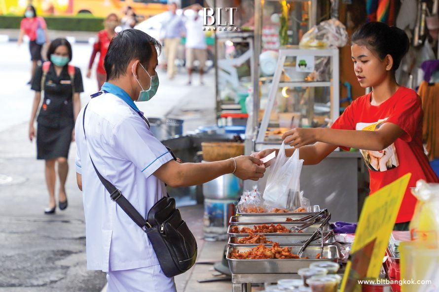
ผู้ค้ารายย่อย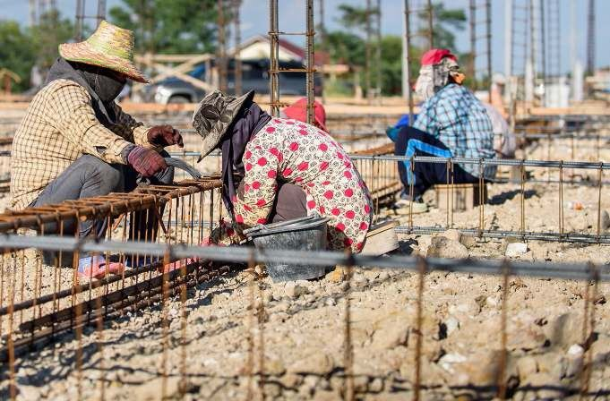
แรงงานก่อสร้าง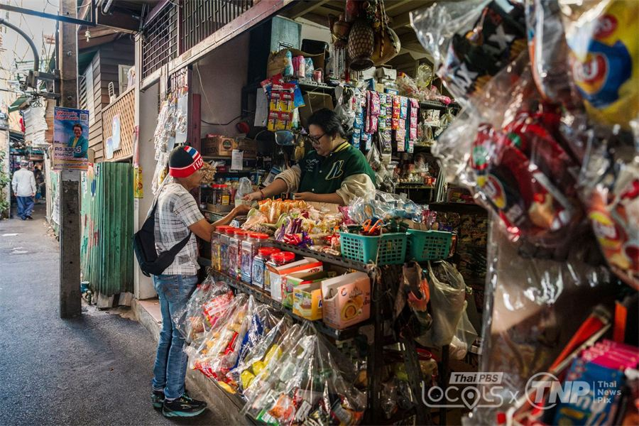
ร้านค้าในชุมชน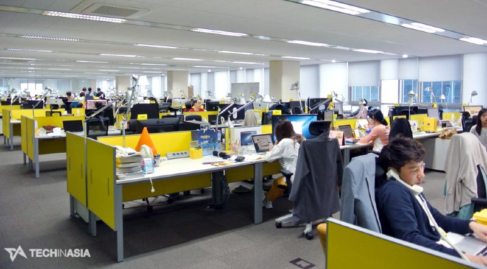
พนักงานบริษัทภาพ: BLT Bangkok · Thai PBS Locals × TNP · Tech in Asia · [ที่มาภาพก่อสร้าง]
03/ 10ข้อเท็จจริงEvidence & Facts
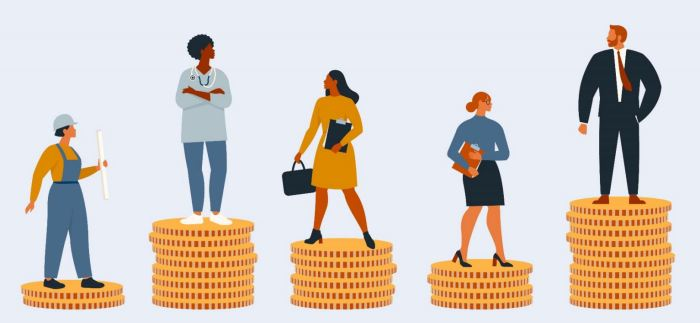
43.3
ค่าความเหลื่อมล้ำด้านรายได้ (จีนี) ของไทยปี 2564 สูงที่สุดในเอเชียตะวันออกและแปซิฟิก ยิ่งใกล้ 100 ยิ่งเหลื่อมล้ำ
[1]รู้สิทธิใน 3 นาที · 1/3
52 จาก 100
คนทำงานในไทยเป็นแรงงานนอกระบบ
สำนักงานสถิติแห่งชาติ 2568
รู้สิทธิใน 3 นาที · 2/3
ทำงานเหมือนกัน
แต่หลักประกันเมื่อป่วย ขาดรายได้ หรือสูงวัย อาจต่างกัน
#ItsMyRightNotCharity
รู้สิทธิใน 3 นาที · 3/3
สิทธิ ไม่ใช่บุญคุณ
หลักประกันพื้นฐานควรเข้าถึงได้อย่างมีศักดิ์ศรี
#ItsMyRightNotCharity
แหล่งข้อมูลหลัก: สำนักงานสถิติแห่งชาติ [2] · ธนาคารโลก [1] · สถาบันวิจัยเพื่อการพัฒนาประเทศไทย (TDRI) ที่เสนอให้ขยายสวัสดิการให้ครอบคลุมมากขึ้น [3]
04/ 10ปัญหาImpacts
เมื่อหลักประกันไม่เท่ากัน ผลที่อาจเกิดขึ้นกระทบแต่ละกลุ่มต่างกัน ทั้งตอนนี้และในระยะยาว
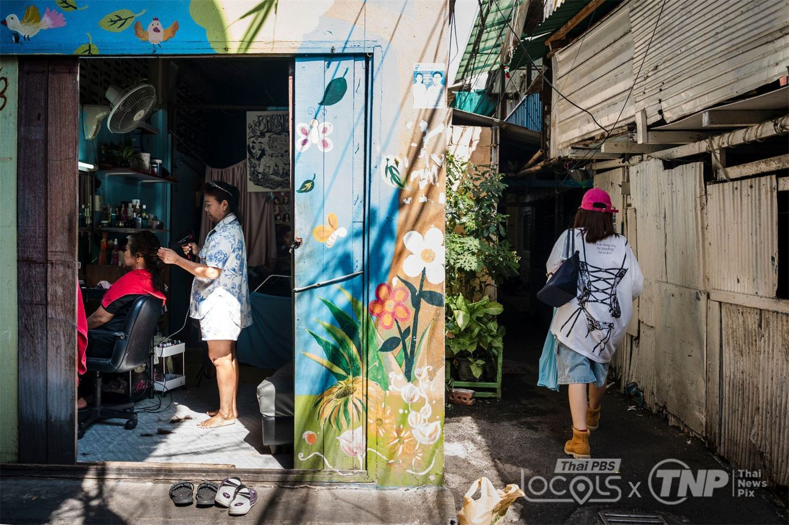
ตอนนี้หยุดงานเมื่อไหร่ รายได้ก็หายทันที
ระยะยาวเงินออมไม่พอเมื่อสูงวัย
ตอนนี้ต้องเลือกระหว่างรายจ่ายจำเป็นกับเวลาดูแลครอบครัว
ระยะยาวไม่มีโอกาสพัฒนาทักษะหรือย้ายงาน
ตอนนี้โอกาสและอุปกรณ์การเรียนไม่เท่ากัน
ระยะยาวความเสียเปรียบส่งต่อไปถึงการทำงาน
ตอนนี้ค่าใช้จ่ายและภาระเวลาเพิ่มขึ้น
ระยะยาวต้องพึ่งรายได้ของคนในบ้าน
ตอนนี้ยอดขายไม่แน่นอน ต้องคุมต้นทุน
ระยะยาวให้สวัสดิการลูกจ้างได้จำกัด
05/ 10ทางออกStakeholders
ช่องว่างนี้ไม่มีใครปิดได้คนเดียว แต่ละฝ่ายมีบทบาทของตัวเอง
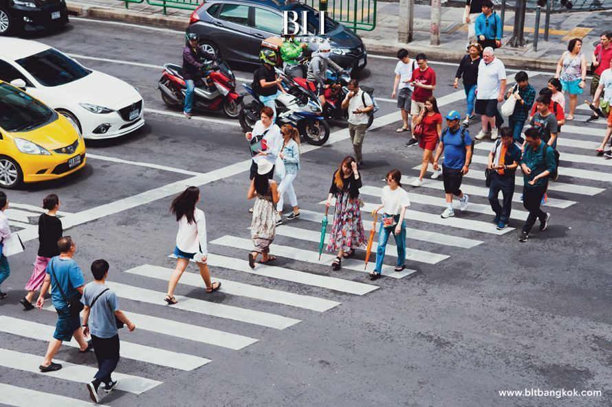
อธิบายสิทธิให้เข้าใจง่าย และทำช่องทางบริการให้ใช้ง่าย
ร่วมหาทางปรับสภาพงานและสวัสดิการที่ทำได้จริง
เล่าอุปสรรคที่เจอจริง และช่วยดูว่าเราสื่อสารถูกต้อง
ตรวจข้อมูล และเปิดพื้นที่ให้คนมาคุยกัน
ให้หลักฐานและแนวทางการคุ้มครองทางสังคม
เรียนรู้ แชร์ข้อมูลที่ถูกต้อง และเสนอปัญหาอย่างเคารพกัน
ฝ่ายที่กล่าวถึงเป็นผู้เกี่ยวข้อง ไม่ใช่พันธมิตรที่ตอบรับแคมเปญแล้ว
06/ 10ทางออกSustainable Development Goals
แคมเปญนี้เกี่ยวข้องกับ 4 เป้าหมายจาก 17 เป้าหมายการพัฒนาที่ยั่งยืนของสหประชาชาติ
SDG10
Reduced Inequalities
เกี่ยวข้องอย่างไรเป้าประสงค์ 10.4 ให้ใช้นโยบายการคลัง ค่าจ้าง และการคุ้มครองทางสังคมลดความเหลื่อมล้ำ [4]
แคมเปญช่วยอธิบายเรื่องนี้ให้เข้าใจง่าย และเปิดพื้นที่ถกข้อเสนอ
SDG1
No Poverty
เกี่ยวข้องอย่างไรเป้าประสงค์ 1.3 ให้ทุกคนมีระบบคุ้มครองทางสังคมขั้นพื้นฐาน [5]
แคมเปญช่วยให้คนรู้จักช่องทางใช้สิทธิ และส่งเสียงเรื่องอุปสรรค
SDG8
Decent Work and Economic Growth
เกี่ยวข้องอย่างไรเป้าประสงค์ 8.5 และ 8.8 เรื่องงานที่มีคุณค่าและการคุ้มครองสิทธิแรงงาน [6]
แคมเปญช่วยพูดเรื่องงานกับหลักประกันไปพร้อมกัน
SDG17
Partnerships for the Goals
เกี่ยวข้องอย่างไรเป้าประสงค์ 17.17 ส่งเสริมความร่วมมือของรัฐ เอกชน และประชาสังคม [7]
แคมเปญช่วยชวนหลายฝ่ายมาร่วมรับฟังกัน
07/ 10แคมเปญOur Campaign
“สวัสดิการคือสิทธิ เพื่อชีวิตที่มั่นคง”
โลโก้เป็นคนสามคนที่มีมือประคองเครื่องหมายเท่ากับไว้ตรงกลาง หมายถึงทุกคนควรได้รับหลักประกันอย่างเท่าเทียม และสังคมช่วยกันดูแลให้เกิดขึ้นจริง
Key Message · ข้อความหลักทุกคนควรเข้าถึงหลักประกันพื้นฐานอย่างมีศักดิ์ศรี ควบคู่กับงานและรายได้ที่เป็นธรรม
คนวัยทำงานอายุ 20–60 ปี ทั้งในระบบและนอกระบบ โดยเริ่มจากนักศึกษาและคนทำงานรอบตัวเรา
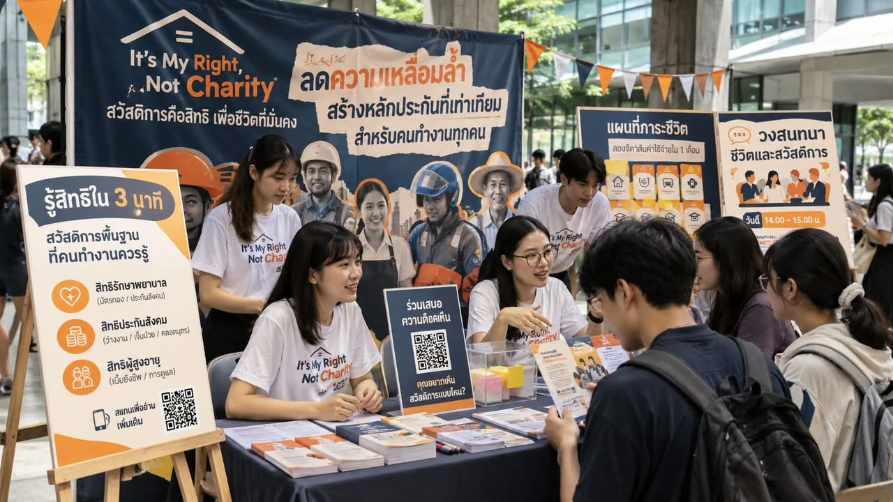
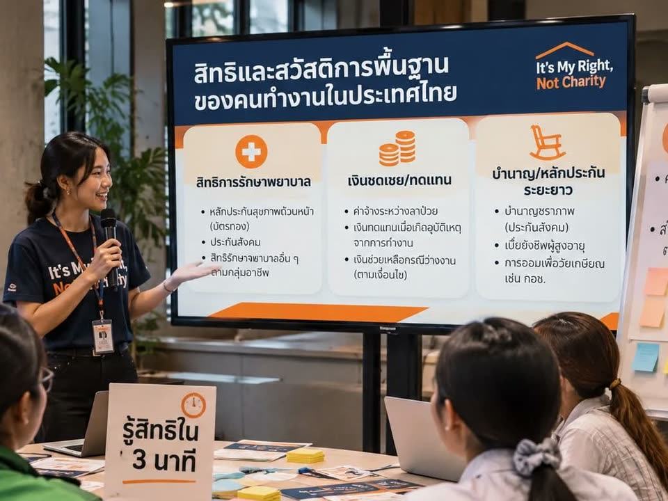
อินโฟกราฟิกและคลิปสั้นที่เล่าเรื่องนี้จบในไม่กี่นาที
คุณร่วมได้ดูการ์ด แล้วแชร์ต่อพร้อมแหล่งที่มา
ดูการ์ดความรู้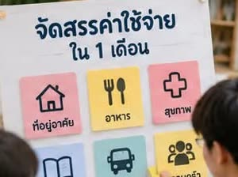
เกมสั้น ๆ ให้ลองบริหารเงินแทนคนทำงานที่ป่วยกะทันหัน
คุณร่วมได้เล่นบนเว็บนี้ได้เลย ใช้เวลา 2 นาที
เล่นเลย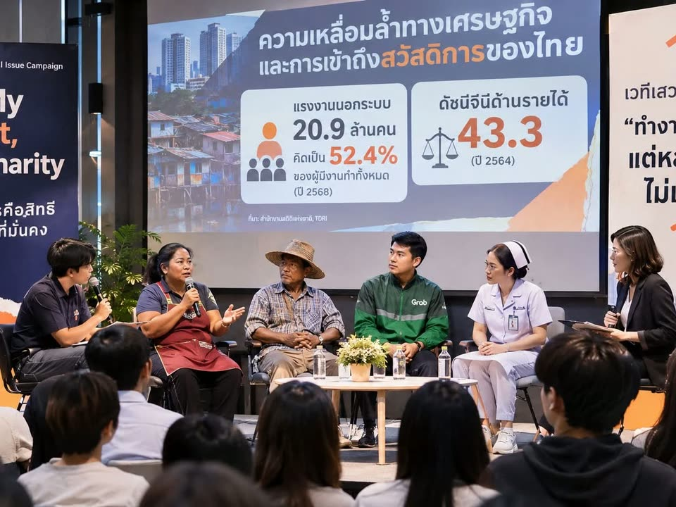
คุยกัน 45–60 นาที ฟังทั้งคนทำงานและเจ้าของกิจการ
คุณร่วมได้มาฟัง ถาม และเล่าประสบการณ์ของคุณ
ดูรายละเอียดบอกอุปสรรคที่เจอ และเสนอสิ่งที่ควรปรับ ไม่ต้องบอกชื่อ
คุณร่วมได้เขียนข้อเสนอบนเว็บนี้ แล้วคัดลอกไปโพสต์
ฝากข้อเสนอ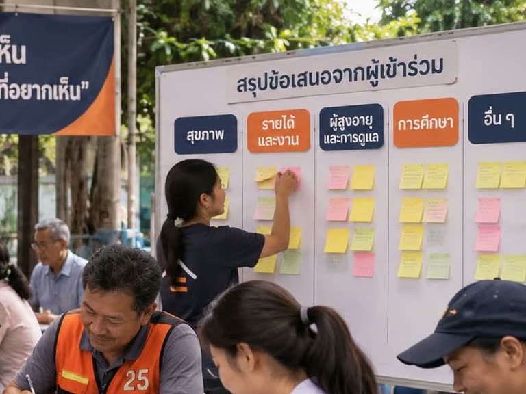
รวมทุกเสียงจากกิจกรรมด้านบนเป็นข้อเสนอ และให้ผู้ร่วมตรวจก่อนเผยแพร่
คุณร่วมได้อ่านข้อสรุป แล้วบอกเราถ้ามีอะไรไม่ตรง
08/ 10ทางออกTake Action
ลองเล่น ลองตอบ แล้วส่งเสียงของคุณ ทุกอย่างทำได้บนหน้านี้
ลองช่วย “ฝน” ตัดสินใจ แล้วดูว่าหลักประกันเปลี่ยนเรื่องราวได้แค่ไหน
เดือนปกติ รายได้ 12,000 บาท พอดีกับรายจ่าย
เกิดเรื่องแล้ว: ฝนป่วยต้องหยุดขับ 7 วัน รายได้เดือนนี้หายไป 3,000 บาท
ฝนจะทำยังไงดี เลือกได้หลายข้อ
เลือกทางออกด้านบน เพื่อให้ฝนผ่านเดือนนี้ไปได้
ตัวเลขทั้งหมดเป็นกรณีสมมติเพื่อชวนคิด ไม่ใช่ค่าครองชีพหรือสิทธิประโยชน์จริง
ตรวจคำตอบในเครื่องของคุณ ไม่เก็บหรือส่งข้อมูล
เลือกอุปสรรค เขียนข้อเสนอสั้น ๆ แล้วคัดลอกไปโพสต์ หรือส่งให้กลุ่มแบบไม่ระบุชื่อ
ข้อความของคุณจะขึ้นตรงนี้
หน้านี้ไม่บันทึกหรือส่งข้อความของคุณ ไม่ต้องใส่ชื่อ เลขบัตรประชาชน หรือข้อมูลรายได้
ทำงานเหมือนกัน แต่หลักประกันอาจต่างกัน มาทำความเข้าใจช่องว่างนี้ผ่านข้อมูลแรงงานนอกระบบปี 2568 แล้วร่วมเสนอว่าบริการพื้นฐานควรเข้าถึงง่ายขึ้นอย่างไร #ItsMyRightNotCharity
คุยกัน 45–60 นาที ในมหาวิทยาลัยหรือออนไลน์ เปิดให้ทุกคนร่วมฟังและถาม
วันเวลา: วัน เวลา · สถานที่: สถานที่หรือลิงก์ออนไลน์
09/ 10ข้อเท็จจริงReferences
เข้าถึงแหล่งข้อมูลออนไลน์ทั้งหมดเมื่อ 24 ตุลาคม 2569
World Bank. (2023). Bridging the gap: Inequality and jobs in Thailand. https://www.worldbank.org/en/country/thailand/publication/bridging-the-gap-inequality-and-jobs-in-thailand
สำนักงานสถิติแห่งชาติ. (2568). การสำรวจแรงงานนอกระบบ พ.ศ. 2568. https://www.nso.go.th/nsoweb/storage/survey_detail/2026/20251126091907_74347.pdf
Thailand Development Research Institute. (2021, December 28). Toward universal welfare system: Leaving no one behind. https://tdri.or.th/en/2021/12/toward-universal-welfare-system-leaving-no-one-behind/
United Nations DESA. (n.d.). Goal 10: Reduced inequalities. https://sdgs.un.org/goals/goal10
United Nations DESA. (n.d.). Goal 1: No poverty. https://sdgs.un.org/goals/goal1
United Nations DESA. (n.d.). Goal 8: Decent work and economic growth. https://sdgs.un.org/goals/goal8
United Nations DESA. (n.d.). Goal 17: Partnerships for the goals. https://sdgs.un.org/goals/goal17
10/ 10แคมเปญCredits & AI Disclosure
กลุ่ม ชื่อกลุ่มSection เลข Section
GE105 Global Alliance and Emerging Issuesมหาวิทยาลัยกรุงเทพภาคเรียนที่ 1 ปีการศึกษา 2569อาจารย์เสฎฐวุฒิ ยุทธาวรกูล
| สื่อ | ใช้ในส่วน | ที่มา |
|---|---|---|
| ภาพผู้คนบนทางเดินลอยฟ้า | 01 หน้าแรก | ใส่ที่มาของภาพ IMG_0617 |
| ภาพแม่ค้าริมทาง และภาพคนข้ามทางม้าลาย | 02, 05 | BLT Bangkok (bltbangkok.com) |
| ภาพร้านค้าในชุมชน และภาพตรอกในชุมชนเมือง | 02, 04 | Thai PBS Locals × TNP |
| ภาพพนักงานในสำนักงาน | 02 | Tech in Asia |
| ภาพแรงงานก่อสร้าง | 02 | ใส่ที่มาของภาพ IMG_0620 |
| ภาพประกอบคนบนกองเหรียญ | 03 | ใส่ที่มาของภาพ IMG_0611 |
| โลโก้แคมเปญ | ทั้งเว็บไซต์ | ออกแบบโดยกลุ่ม |
| ภาพจำลองกิจกรรม 6 ภาพ (บูธ และกิจกรรมทั้ง 5) | 07 | กลุ่มสร้างด้วย Generative AI (ชื่อเครื่องมือที่ใช้สร้างภาพ) เป็นภาพจำลอง ไม่ใช่ภาพเหตุการณ์จริง |
| การ์ดความรู้ ภาพ 100 คน และแผนภาพแรงงาน | 01, 03, 08 | สร้างด้วยโค้ด (SVG/HTML) โดย Claude ตามแนวคิดของกลุ่ม ตัวเลขจากสำนักงานสถิติแห่งชาติ [2] |
| สีของ SDGs และฟอนต์ | ทั้งเว็บไซต์ | คู่มือสัญลักษณ์ SDGs ของสหประชาชาติ · Google Fonts (SIL Open Font License 1.1) |
ภาพถ่ายใช้เพื่อการศึกษาและให้เครดิตเจ้าของภาพ ไม่ได้ใช้โลโก้ขององค์กรใดเพื่อสื่อว่ารับรองแคมเปญ ส่วนเครื่องแบบที่ปรากฏในภาพจำลองด้วย AI ไม่ได้หมายความว่าองค์กรนั้นร่วมหรือรับรองแคมเปญ
| เครื่องมือ | ใช้ทำอะไร | สมาชิกตรวจสอบอย่างไร |
|---|---|---|
| AI Passport (Deep Research) | ร่างแผนการค้นคว้าตั้งต้น ใช้เป็นแนวทางเท่านั้น | สิ่งที่สมาชิกทำจริง |
| ChatGPT | สังเคราะห์เอกสาร จัดโครงร่าง ร่างการวิเคราะห์และแผนแคมเปญ และจัดทำรายงาน | สิ่งที่สมาชิกทำจริง |
| ชื่อเครื่องมือที่ใช้สร้างภาพ | สร้างภาพจำลองบรรยากาศกิจกรรมของแคมเปญ 6 ภาพ (ส่วนที่ 07) | สิ่งที่สมาชิกทำจริง |
| Claude (Anthropic) | ออกแบบและเขียนโค้ดเว็บไซต์ วาดภาพประกอบ จัดวางภาพของกลุ่มลงเว็บ ทำเกมและแบบทบทวน และตรวจตัวเลขหลักกับแหล่งต้นทาง | สิ่งที่สมาชิกทำจริง |